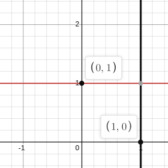

Common Graphs
- 1) linear graphs
- 1a. slope intercept form
- 1b. point slope form
- 1c. vertical lines
- 2) absolute value
1a. y = mx + b; where in this graph the m represents the slope.
m
=
rise
run
eg. m = 2; and b = 3
1b. y-y₁=m(x-x₁); where in this graph the m represents the slope again, and (x₁, y₁) is a specific point.
m
=
rise
run
eg. m = 1; x₁ = 3; and y₁ = -1
1c. y = a and x = a; where a represents represents some constant value
eg. a = 1; red for y=; and black for x=
2. y = |x|; where the '||' represent the absolute value operation
eg. showing the general parent function for absolute value
Quadratic Graphs
- 1) Powers of x
- a. quadratic
- b. cubic
- c. root
Trig. Graphs
Polar Graphs
to be continued...